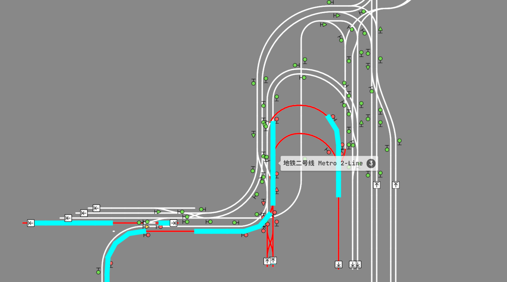

Fully functional rail network
Lines, yards, and junctions that behave like real infrastructure—not decoration.
Forge 1.20.1 · Create · Trains · Survival
Build factories. Ride trains. Track them in real time.
From the first platform to the last signal—one continuous system.
1 7

Step into a fully realized metro system built for a living world.

An active rail yard where multiple trains operate at once.

A fully signaled railway—every movement is controlled.

Massive interchanges connect lines across the entire network.

Trains arrive, depart, and connect players across the world.

Every station is designed for immersion—from entrance to platform.

Beyond the rails lies a world waiting to be explored.
This is a living rail network with Create-powered trains, stations, signals, infrastructure, and tracking you can open on your phone—not a generic modded lobby.
Lines, yards, and junctions that behave like real infrastructure—not decoration.
Factories and mechanics that feed the world your trains move through.
Follow the network in-game and from your phone with the live map.
A survival map that grows with stations, industry, and player projects.
Builders, engineers, and explorers shaping the network together.
Monitor the entire network live. See where trains are, plan your route, and stay connected—even from your phone.

Add your live map screenshot as images/live-map.png (path set in site-config.js).
BlueMap renders the server as a full 3D world map. Great for scouting build sites, finding rail lines, and showing off projects.
Stations, signals, consists, and the spaces between—built to be used.


Explore a world full of survival builds, scenic paths, player projects, and destinations connected by rail.
Install Forge, get the modpack from our Discord, then connect with the server IP—four steps to your first platform.
Server address
mc.rslover521minecraftserver.pro
Need the map? Open the live rail map.
Looking for builders, engineers, explorers, and casual players who want to be part of a growing world.